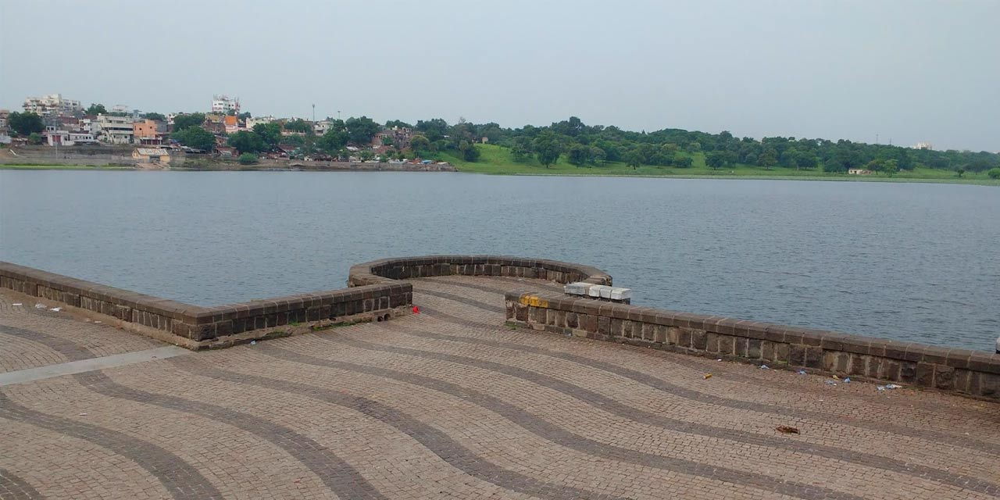

Nagpur has never failed to astonish tourists with its magnificence and richness! Nagpur is India's third-largest city,
located in Maharashtra's central region. It is also renowned as Maharashtra's winter capital, attracting the majority of
visitors in the second half of the year.
Plan your vacation to Nagpur between October and March. The weather is quite good, with temperatures dropping to
10 degrees Celsius. Winters in Nagpur are often moderate and pleasant, making it one of the best seasons to
enjoy the city's beautiful sights.
Visit the major tourist sites in Nagpur to enjoy the magnificent Nagpur grandeur and beautiful environment sights of
Nagpur scenery. It is an integral piece of Maharashtra's Vidarbha region, with a rich Maratha heritage at its heart.
In and around Nagpur, you'll be able to see a fantastic blend of rural and urban culture and lifestyle. Plan a fun family
trip here and enjoy the lesser-known sights in the Nagpur region.
Nagpur Metro has added a addtional beauty to the city
Nagpur Metro Finds a Place in Guinness World Records for Longest Viaduct.
01. Deekshabhoomi |
02. Ambazari Lake |
03. Raman Science Centre |
 |
 |
 |
04. Sitabuldi Fort |
05. Futala Lake |
|
 |
 |
Click here to Find about must visit places in Nagpur, Maharashtra